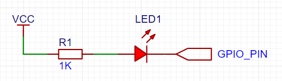
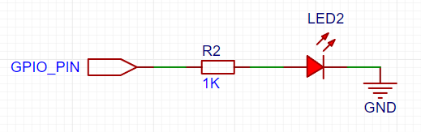
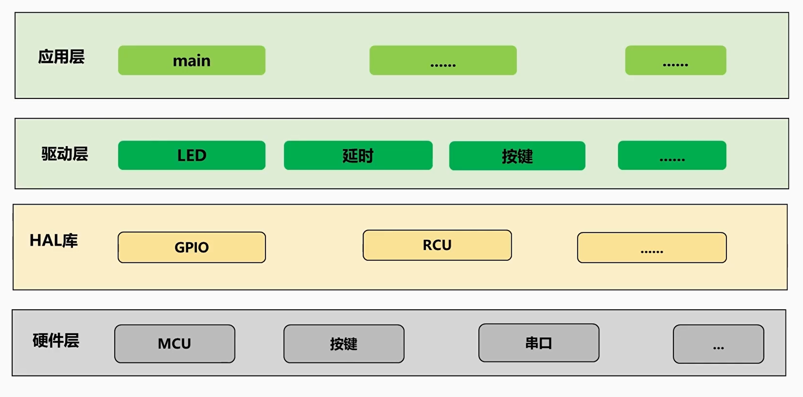
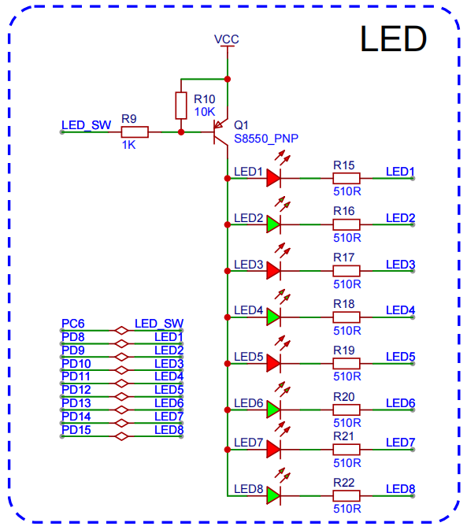

<!DOCTYPE lake>
<h1 data-lake-id="Ux01V" id="Ux01V"><span data-lake-id="u0ac1f546" id="u0ac1f546">学习目标</span></h1><ol list="u3f281525"><li data-lake-id="ua33f06c3" fid="ue3060477" id="ua33f06c3"><span data-lake-id="u081f0e85" id="u081f0e85">学会点亮不同接线方式的LED灯</span></li><li data-lake-id="u949a1150" fid="ue3060477" id="u949a1150"><span data-lake-id="u1c99fade" id="u1c99fade">认识驱动层的构建思想</span></li><li data-lake-id="u1a70a015" fid="ue3060477" id="u1a70a015"><span data-lake-id="u31201ac0" id="u31201ac0">强化结构体的定义及使用能力</span></li><li data-lake-id="ub8fa38da" fid="ue3060477" id="ub8fa38da"><span data-lake-id="ucdda43f8" id="ucdda43f8">强化代码的封装和复用能力</span></li></ol><p data-lake-id="uba9ac8ab" id="uba9ac8ab"><br/></p><h1 data-lake-id="y4LBZ" id="y4LBZ"><span data-lake-id="u52caa2f7" id="u52caa2f7">点灯的两种方式</span></h1><p data-lake-id="ufae36d34" id="ufae36d34"><span data-lake-id="u84547f37" id="u84547f37">不同颜色LED，达到相同亮度，对应的电压不同，通常需要接入220Ω到10KΩ的限流电阻，阻值越小，LED越亮，反之LED越暗，以下两种方式皆可。</span></p><h2 data-lake-id="WnrNq" id="WnrNq"><span data-lake-id="u3031031d" id="u3031031d">灌入电流法</span></h2><p data-lake-id="u6ecee417" id="u6ecee417"></p><p data-lake-id="u28cb3b45" id="u28cb3b45"><span data-lake-id="u485adf57" id="u485adf57">灌入电流接法：LED亮灯供电VCC由芯片外部提供，灌入MCU的GPIO_PIN引脚</span></p><ul list="u6a397388"><li data-lake-id="u56c2c853" fid="ud86e5738" id="u56c2c853"><span data-lake-id="u850e3697" id="u850e3697">优点：可提供较大电压电流，让灯更亮</span></li><li data-lake-id="u1c7de5d0" fid="ud86e5738" id="u1c7de5d0"><span data-lake-id="u3f2e556c" id="u3f2e556c">缺点：外部电源大幅变化时，可能导致MCU引脚烧毁。</span></li></ul><h2 data-lake-id="KxbB5" id="KxbB5"><span data-lake-id="uba03c10d" id="uba03c10d">输出电流法</span></h2><p data-lake-id="uc1f89c18" id="uc1f89c18"></p><p data-lake-id="u21479991" id="u21479991"><span data-lake-id="uf57efd4b" id="uf57efd4b">输出电流法：由MCU提供正极供电，使用推挽输出模式可以让一般LED亮起。通常接小LED用这种接法。</span></p><ul list="udac38fc7"><li data-lake-id="u176d8691" fid="u0305e46a" id="u176d8691"><span data-lake-id="ua15bb8f7" id="ua15bb8f7">优点：安全可控</span></li><li data-lake-id="ue9677edd" fid="u0305e46a" id="ue9677edd"><span data-lake-id="u0a9cf482" id="u0a9cf482">缺点：驱动能力有限</span></li></ul><p data-lake-id="uea2b9ad4" id="uea2b9ad4"><span data-lake-id="u4d3fdf90" id="u4d3fdf90">​</span><br/></p><h1 data-lake-id="HyMw7" id="HyMw7"><span data-lake-id="u63403b63" id="u63403b63">扩展板点灯</span></h1><p data-lake-id="ue592c8e2" id="ue592c8e2"></p><p data-lake-id="ub1e60635" id="ub1e60635"><span data-lake-id="u06db4241" id="u06db4241">LED驱动包含什么功能?</span></p><ol list="u055d02fb"><li data-lake-id="ue6683411" fid="ud66dae1c" id="ue6683411"><span data-lake-id="u3715ddb2" id="u3715ddb2">初始化4个LED灯</span></li><li data-lake-id="uec4dff33" fid="ud66dae1c" id="uec4dff33"><span data-lake-id="ub6975b06" id="ub6975b06">打开某一个灯</span></li><li data-lake-id="u5a7f648d" fid="ud66dae1c" id="u5a7f648d"><span data-lake-id="u2fddc49b" id="u2fddc49b">关闭某一个灯</span></li></ol><p data-lake-id="uac981b57" id="uac981b57"><br/></p><p data-lake-id="uc7b095ef" id="uc7b095ef"><br/></p><p data-lake-id="u5f0fb36c" id="u5f0fb36c"></p><h2 data-lake-id="Ks5B4" id="Ks5B4"><span data-lake-id="uf282d0bc" id="uf282d0bc">点灯方式</span></h2><ul list="u3128b68f"><li data-lake-id="ub1638da8" fid="ubab9fa76" id="ub1638da8"><span data-lake-id="ua263209a" id="ua263209a">初始化所有IO为推挽输出模式</span></li><li data-lake-id="u00defff8" fid="ubab9fa76" id="u00defff8"><span data-lake-id="u17342256" id="u17342256">默认将总开关LED_SW拉高，总开关关闭</span></li><li data-lake-id="u4da8bc05" fid="ubab9fa76" id="u4da8bc05"><span data-lake-id="u27e7dee5" id="u27e7dee5">默认将所有LED1-8拉高，为关闭状态</span></li><li data-lake-id="uc5409c98" fid="ubab9fa76" id="uc5409c98"><span data-lake-id="u3e03ecff" id="u3e03ecff">LED_SW总开关拉低导通（三极管为PNP型），所有LED阳极可有供电。</span></li><li data-lake-id="u86371010" fid="ubab9fa76" id="u86371010"><span data-lake-id="u594d72c5" id="u594d72c5">在总开关拉低导通时，任意LED直接拉低自己的IO即可点亮</span></li></ul><p data-lake-id="u86e40e46" id="u86e40e46"><br/></p><h2 data-lake-id="WYGq9" id="WYGq9"><span data-lake-id="u50e3c474" id="u50e3c474">点亮LED1-4</span></h2><p data-lake-id="u4fa20d0d" id="u4fa20d0d"><span data-lake-id="u164deb22" id="u164deb22">为了能够应对批量初始化的需求，我们可以定义结构体来描述参数：</span></p><span class="yuque-card-unsupported">[codeblock]</span><p data-lake-id="uf3a63525" id="uf3a63525"><span data-lake-id="ub3e04ac9" id="ub3e04ac9">进而声明出所有的GPIO对应参数</span></p><span class="yuque-card-unsupported">[codeblock]</span><p data-lake-id="u1a33dc0d" id="u1a33dc0d"><span data-lake-id="u5adabe6b" id="u5adabe6b">​</span><br/></p><h2 data-lake-id="pn0J2" id="pn0J2"><span data-lake-id="ud97b5e10" id="ud97b5e10">完整实现</span></h2><h3 data-lake-id="ApzXB" id="ApzXB"><span data-lake-id="u5a66e90e" id="u5a66e90e">头文件声明</span></h3><span class="yuque-card-unsupported">[codeblock]</span><h3 data-lake-id="zLzw3" id="zLzw3"><span data-lake-id="uad2d746d" id="uad2d746d">c文件实现</span></h3><span class="yuque-card-unsupported">[codeblock]</span><h3 data-lake-id="H2T2a" id="H2T2a"><span data-lake-id="ub1074b74" id="ub1074b74">主文件调用</span></h3><span class="yuque-card-unsupported">[codeblock]</span><h1 data-lake-id="bY35P" id="bY35P"><span data-lake-id="uc8a6596f" id="uc8a6596f">练习题</span></h1><p data-lake-id="u6e29c7c8" id="u6e29c7c8"><span data-lake-id="u9f31d9cd" id="u9f31d9cd">点亮扩展板上的所有灯LED1-8 (每隔1秒进行一次亮灭)</span></p>